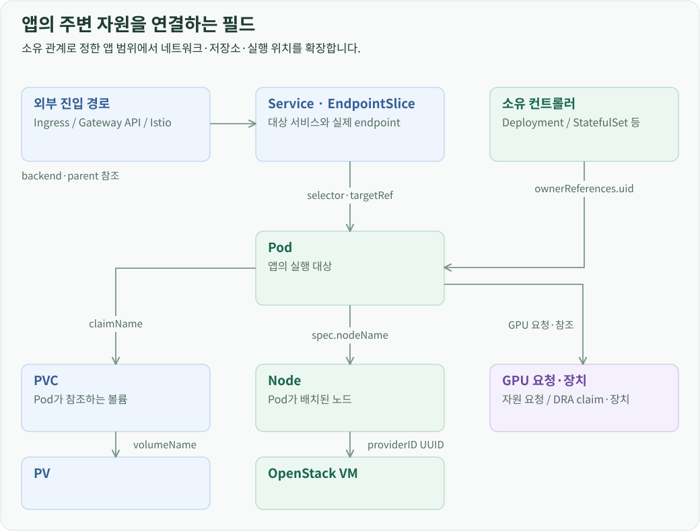
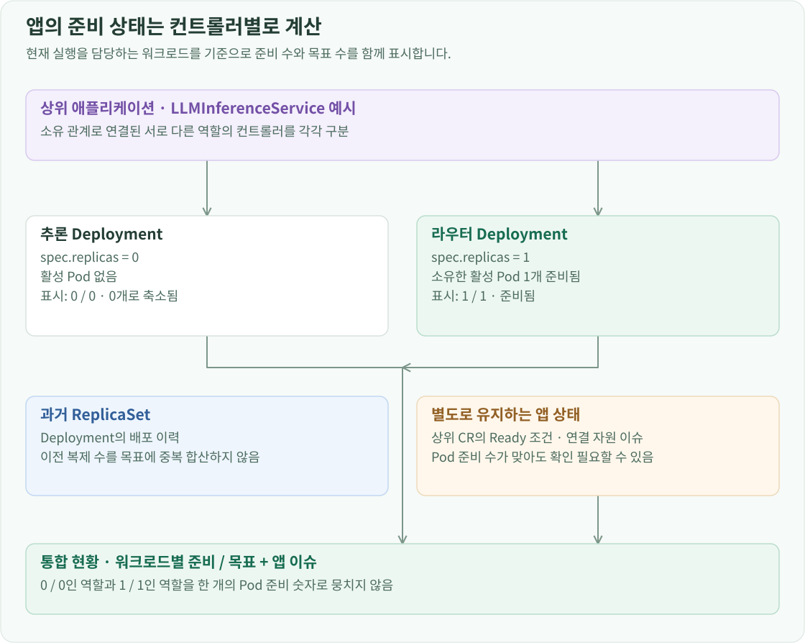
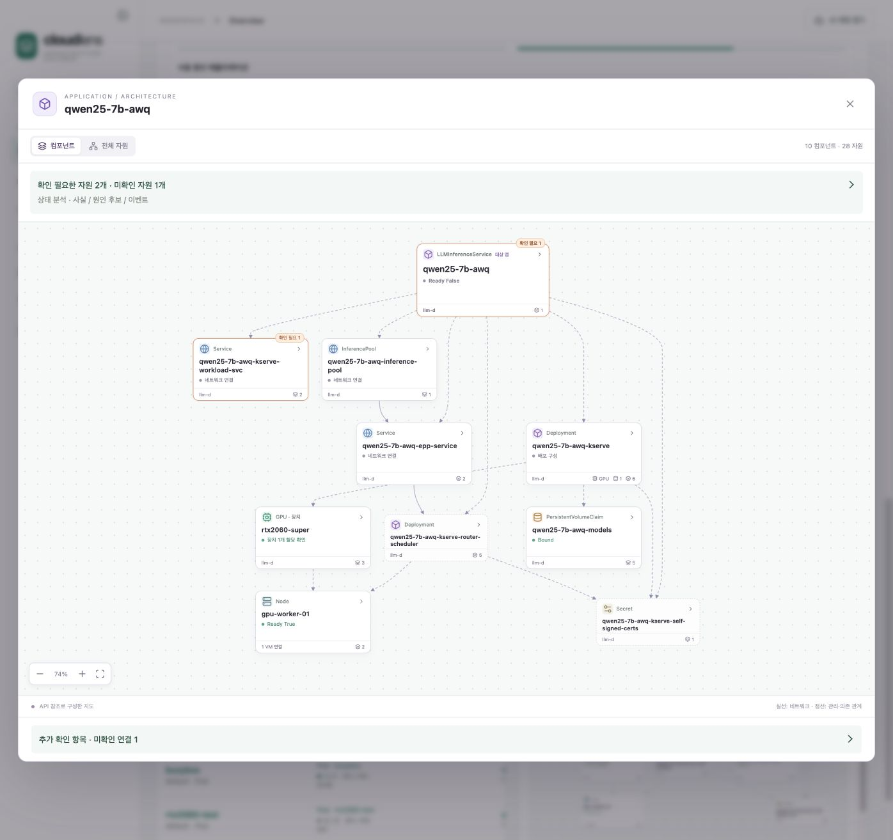
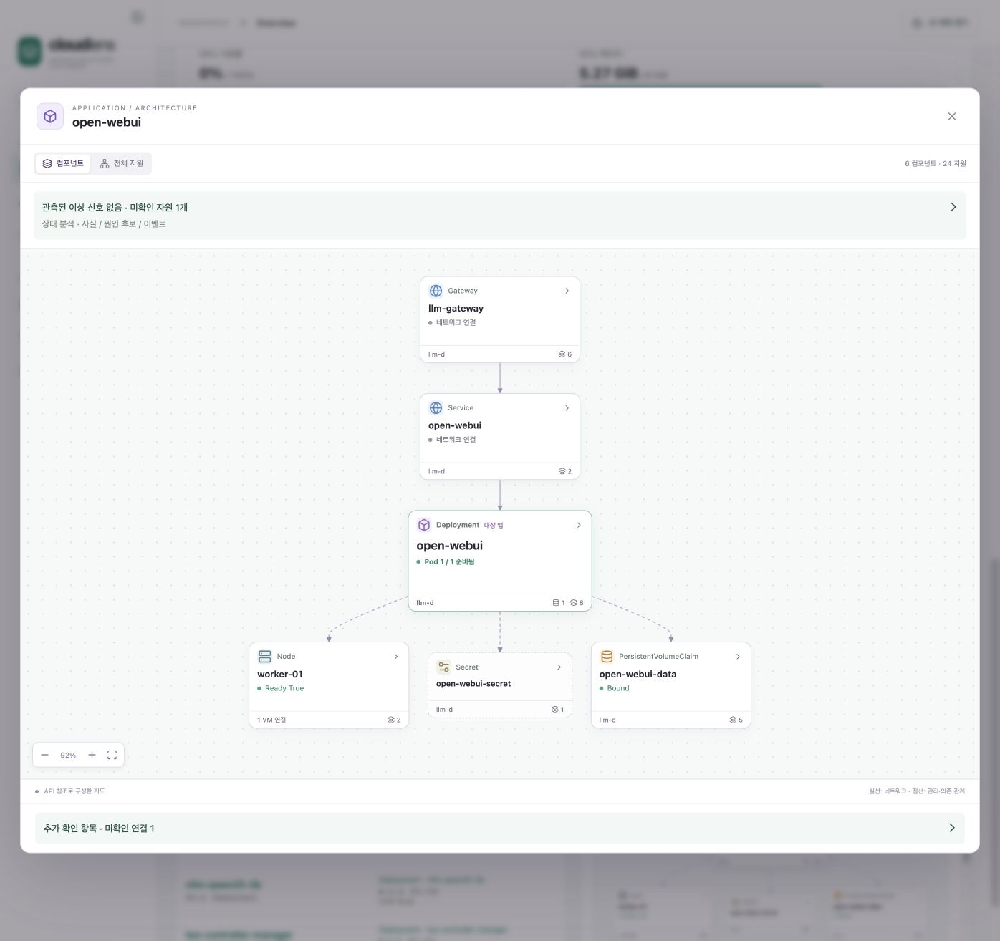
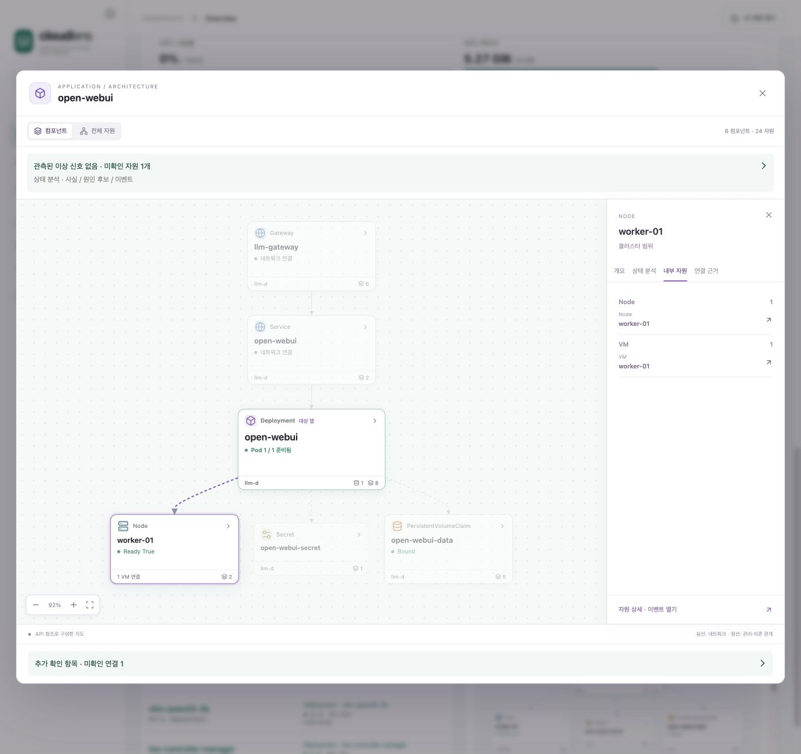

프로젝트 소개 · CloudLens 개발 · 전체 문서
개요
CloudLens는 Kubernetes 자원을 그래프로 구성한 뒤, 소유 관계를 따라 하나의 앱에 속한 워크로드를 묶습니다. 여기에 서비스 대상, 저장소 참조, 노드 배치 관계를 연결해 앱에서 OpenStack VM까지 이어지는 구성도를 만듭니다. 통합 현황과 채팅의 앱 구성 조회는 같은 관계 계산을 사용합니다.
소유 관계로 앱을 묶는 과정
각 자원은 종류·Namespace·이름으로 조회하고, 객체의 UID로 실제 대상을 식별합니다. ownerReferences에는 상위 자원의 UID가 들어 있으므로 Pod에서 관리 주체를 역으로 따라갈 수 있습니다.

Deployment가 최상위 소유자이면 그 Deployment를 앱의 기준으로 삼습니다. KServe 같은 컨트롤러가 Deployment를 만들었다면 상위 사용자 정의 자원까지 따라갑니다. 이후 같은 소유자 아래의 자원을 모아 앱의 워크로드 집합을 구성합니다. 소유자가 없는 단독 Pod도 독립된 실행 단위로 다룹니다.
소유 관계와 사용 관계는 별도의 간선으로 저장합니다. Service가 Pod를 선택하거나 Pod가 Node에 배치되는 관계는 앱의 주변 구성을 확장할 때 사용합니다. 이 구분으로 같은 Node나 저장소를 사용하는 여러 앱을 각각 유지하면서 공유 자원을 함께 표시할 수 있습니다.
네트워크·저장소·실행 인프라 연결
앱의 워크로드 집합이 정해지면 자원별 참조 규칙으로 주변 자원을 연결합니다. 그래프의 간선에는 관계 종류와 연결에 사용한 필드를 함께 남깁니다.

네트워크 연결은 Service가 선택하는 Pod에서 시작합니다. 같은 Namespace의 Pod labels와 Service selector를 대조하고, EndpointSlice에 기록된 대상 참조도 연결합니다. Ingress·Gateway API·Istio 자원에서는 backend와 parent 참조를 읽어 해당 Service로 이어지는 진입 경로를 찾습니다.
저장소는 Pod의 볼륨 설정에서 claimName을 읽어 PVC를 찾고, PVC의 volumeName으로 PV를 연결합니다. GPU는 워크로드의 GPU 자원 요청과 DRA claim·장치 참조를 읽습니다. 이처럼 자원에 실제로 기록된 연결을 따라가기 때문에 저장소나 GPU를 사용하는 앱에만 해당 컴포넌트가 나타납니다.
실행 위치는 Pod의 spec.nodeName으로 Node를 찾은 뒤, Node의 spec.providerID에 들어 있는 UUID를 OpenStack VM ID와 대조해 결정합니다. 이름이 비슷한 VM을 추측해서 연결하는 대신 플랫폼이 기록한 식별자로 같은 머신인지 확인합니다.
Kubernetes 연결 프로필에 저장한 인프라 연결 정보는 이때 조사할 OpenStack 클라우드를 정합니다. 관계 계산 결과에는 각 자원의 프로필과 식별자를 보존합니다. 사용자는 구성도에서 VM을 선택해 OpenStack 상세 화면으로 이동할 수 있습니다.
컨트롤러별 준비 상태 계산
앱 하나에 여러 컨트롤러가 있으면 각각의 준비 수와 목표 수를 계산합니다. 목표 수는 컨트롤러의 설정·상태에서 가져오고, 준비 수는 그 컨트롤러가 소유한 Pod의 Ready 조건을 기준으로 계산합니다.

| 워크로드 | 목표 수 | 상태 계산 |
|---|---|---|
| Deployment·StatefulSet·ReplicationController·독립 ReplicaSet | spec.replicas |
소유한 실행 중 Pod의 Ready 수와 목표 수 비교 |
| DaemonSet | status.desiredNumberScheduled |
배치 대상 수와 Ready Pod 수 비교 |
| Job | spec.completions와 실행 설정 |
succeeded, Complete·Failed 조건, suspend 설정 확인 |
| 단독 Pod | 실행 대상 1개 | Ready·종료·삭제 상태에 따라 표시 |
Deployment 아래의 ReplicaSet은 소유 관계를 따라 Pod를 찾는 데 사용하고, 준비 상태 목록에서는 Deployment에 합칩니다. 배포 이력 때문에 남아 있는 ReplicaSet들이 목표 수에 중복으로 더해지는 것을 막습니다.
Pod를 집계할 때는 완료·실패한 Pod와 삭제 중인 Pod를 실행 대상에서 분리합니다. 목표가 0이고 실행 중인 Pod도 없으면 0 / 0 · 규모 축소됨, 목표가 0인데 Pod가 남아 있으면 축소 진행 상태로 표시합니다. Job과 종료된 단독 Pod는 완료 상태를 별도로 표시합니다. 컨트롤러의 observedGeneration이 현재 generation보다 뒤처져 있으면 상태 갱신을 기다리는 것으로 처리합니다.
이 계산으로 모델 서빙 앱의 추론 Deployment는 0 / 0, 라우터 Deployment는 1 / 1처럼 같은 앱 안의 실행 상태를 나누어 보여줄 수 있습니다. 상위 자원의 Ready 조건도 함께 저장해 앱 상태와 워크로드 상태를 각각 표시합니다.
관계 데이터와 컴포넌트 화면
서버는 조회한 자원의 UID를 화면에서 받은 UID와 비교한 다음 앱 구성을 계산합니다. 응답에는 자원 노드, 관계 간선, 연결 근거와 상세 화면을 열기 위한 대상 정보가 들어갑니다.
프론트엔드는 이 그래프를 두 수준으로 표현합니다. 컴포넌트 화면에서는 Deployment, Service, 저장소, Node, GPU 같은 주요 구성을 크게 보여주고, ReplicaSet·EndpointSlice 같은 세부 자원은 관련 컴포넌트 안에 묶습니다. 전체 자원 화면에서는 개별 노드와 간선을 펼쳐 볼 수 있습니다. 그래프 배치는 Dagre로 계산하며, 컴포넌트를 선택하면 내부 자원과 연결 근거를 표시합니다.

채팅에서 앱 구성을 요청할 때도 모델이 정한 대상을 같은 구성 API에 전달합니다. 모델은 조사할 앱과 작업을 선택하고, 화면은 서버가 계산한 자원·연결·준비 상태를 표시합니다.
이렇게 찾은 Pod·PVC 집합은 앱별 사용량 집계에도 사용합니다. 호스트·저장소·노드의 잔여 용량은 플랫폼별 할당 기준으로 계산합니다.
Open WebUI에서 VM까지 이어지는 구성

Open WebUI는 외부 진입 경로, Service, 실행 워크로드, PVC 등을 컴포넌트로 표시합니다. Deployment가 소유한 ReplicaSet과 Pod는 워크로드 컴포넌트 내부에 들어갑니다. Service나 PVC를 선택하면 해당 자원의 상세 화면을 열 수 있습니다.
서버는 Pod의 ownerReferences에 기록된 UID를 따라 ReplicaSet과 open-webui Deployment를 찾고 같은 앱으로 묶습니다. 주변 자원은 다음 참조를 따라 연결합니다.
HTTPRoute/open-webui의backendRefs가Service/open-webui를 가리킵니다.- Service의 selector가 앱 Pod의 labels와 일치합니다.
- Pod의
volumes[].persistentVolumeClaim.claimName은open-webui-data입니다. - Pod의
nodeName은worker-01입니다.
조회 결과에는 대상 자원뿐 아니라 owner, route_backend, selector, volume, scheduled_on 같은 관계 종류와 근거 필드도 남습니다. 화면에서 선 하나를 선택했을 때 어떤 설정으로 연결됐는지 설명할 수 있는 이유입니다.

이 앱의 Pod는 worker-01에 배치되어 있습니다. 해당 Node의 providerID에서 추출한 UUID로 OpenStack VM을 찾아 같은 실행 인프라 컴포넌트에 넣습니다. 앱에서 노드와 VM으로 이어지는 탐색 경로가 이 식별자 연결로 만들어집니다.
관계 데이터에는 OpenStack 연결 프로필과 VM ID를 함께 넣습니다. 그래프에서 VM 상세를 열면 이 식별자로 대상 API를 조회합니다.